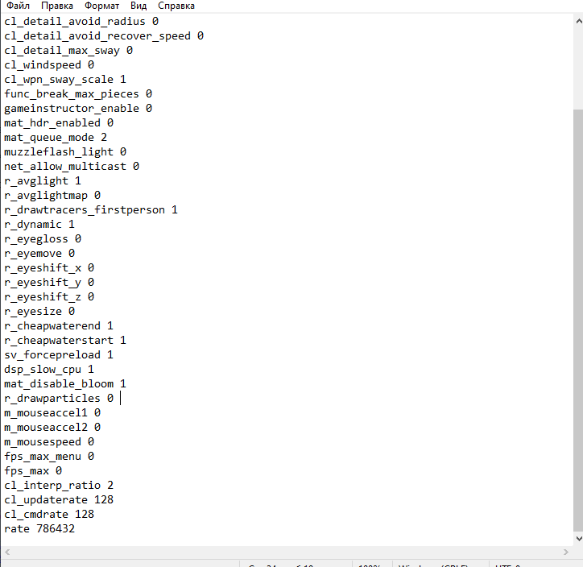

Если у вас слабый ПК, рекомендую поставить самые низкие настройки графики
Если у вас достаточно мощный ПК, то можете ставить немного другие настройки. При высоких настройках "Детализация шейдоров" можно видеть лучше противника через молотов
Полезные и нужные бинды
Для удобной игры остро необходимы бинды. В этом разделе покажу от самый полезных биндов, до самых бесполезных, которые ничем не помогут (для фана)
Movement
bind "клавиша" "+speed;r_cleardecals" - очистка крови
bind "MWHEELDOWN" "+jump";bind "MWHEELUP" "+jump";bind "SPACE" "+jump" - прыжок на колесико (вверх и вниз)
bind "клавиша" "toggle cl_righthand 0 1" - менять руки
alias +djump "+jump; +duck";
alias -djump "-jump; -duck"; ⠀⠀- бинд на высокий прыжок с ctrl
В этом разделе я покажу, как отключить акселерацию мыши в игре и в параметрых виндоуса, чтобы в ксго она не плавала
Настройка мыши в Windows
Для начала надо отключить сглаживание мыши в виндоус
Заходим в параметры Виндоус > Устройство > Мышь > Дополнительные параметры мыши > Параметры указателя и убираем галочку с Включить повышенную точность установки указателя
Углубленная настройка мыши
В этом разделе будем менять настройки реестора, тем людям, кому уж очень нужно чувствовать сенсу
Переходите по ссылке и скачивайте этот файл (не бойтесь, вирусов нет), разархивируйте содержимое файла
Заходим в MarkC акселарация > MarkC_Windows_10+8.x+7_MouseFix > запускаем файл Windows_7+Vista+XP_Default.reg, жмем да и еще раз да.
Далее выключаем DVR. Это настройка от Xbox, которая запускается по вверх окна ксго, ее надо отключить.
Заходим в Выключение DVR, и запускаем два файла (Disable DVR 1 и Disable DVR 2), жмем да и еще раз да
Последним этапом будем менять настройку мыши в реестре. Этот способ вряд ли, может что-то поменять. Я изменений не увидел, но может вы почувствуйте. Заходим в реестр > нажимаем Win+R и пишем regedit
Ищем этот путь. В параметрах MouseSpeed, MouseThreshold1, MouseThreshold2, кликаем правой кнопкой мыши > Изменить > Ставим значение на 0.
Консольные команды для буста фпс, autoexec и быстрая настройка карты для тренировки гранат
Консольные команды очень важны в игре, например, поменять руки, прицел, радар и не только. Сейчас я покажу какие консольные команды дадут буст фпс и удобство в игре.
Консольные команды для буста фпс
cl_forcepreload 1
cl_disablehtmlmotd 1
cl_disablefreezecam 1
cl_autohelp 0
cl_showhelp 0
cl_hud_playercount_showcount 0
cl_detail_avoid_force 0
cl_detail_avoid_radius 0
cl_detail_avoid_recover_speed 0
cl_detail_max_sway 0
cl_windspeed 0
cl_wpn_sway_scale 1
func_break_max_pieces 0
gameinstructor_enable 0
mat_hdr_enabled 0
mat_queue_mode 2
muzzleflash_light 0
net_allow_multicast 0
r_avglight 1
r_avglightmap 0
r_drawtracers_firstperson 1 - 0 убирает пули
r_dynamic 1 - 0 убирает тоже чето
r_eyegloss 0
r_eyemove 0
r_eyeshift_x 0
r_eyeshift_y 0
r_eyeshift_z 0
r_eyesize 0
r_cheapwaterend 1
r_cheapwaterstart 1
sv_forcepreload 1
dsp_slow_cpu 1 — незначительное снижения качества звука. не советую, но дает буст фпс
mat_disable_bloom 1 — отключает bloom-эффект
r_drawparticles 0 — убирает почти все анимацию — выстрелы, всплески воды и т.д.
m_mouseaccel1 0
m_mouseaccel2 0
m_mousespeed 0
fps_max_menu 0
fps_max 0
cl_interp_ratio 2
cl_updaterate 128
cl_cmdrate 128
rate 786432
Все эти команды прибавляют фпс игре и улучшает индексация пуль в ксго. Каждую команду можно самому выбрать и вставлять вручную в консоль. Некоторые параметры нужно каждый раз менять при заходе в игру.
Но зачем заморачивается, если можно сделать autoexec. В него можно записать все эти настройки, и при заходе в ксго, не нужно будет вводить параметры снова.
Для этого создаем блокнот и пишем туда все эти консольные команды. Сохраняем с названием autoexec, после точки обязательно пишем .cfg (autoexec.cfg).

Заходим в свойства ксго и этот файл мы переносим в папку cfg.
Теперь при заходе в игру все настройки автоматически применяются.
Настройка карты для тренировки гранат, autoexec, бинды
Чтобы повысить свой скилл вам необходимо знать гранаты на определенных картах, или же вы хотите повторить тактику со своей командой. Для этого вам надо настроить свой сервер. Бесконечная разминка, повтор или траектория гранат, и многое другое нужно самостоятельно использовать консолные команды.
Основные команды для настройки своего сервера:
sv_cheats 1 - команда для консоли разработчиков
bot_kick - убирает всех ботов
mp_freezetime 0 - время после начала раунда
mp_maxmoney 300000 - максимальное колличество денег
mp_startmoney 300000 - сколько вначла раунда денег
mp_autoteambalance 0 - убирает баланс команд
mp_limitteams 0 - убирает лимит гранат в инвентаре
mp_maxrounds 999 - максимальное число раундов
mp_timelimit 60 - убирает лимит игроков в команде
mp_buy_anywhere 1 - закупк апо всей карте
ammo_grenade_limit_total 1200 - дает колличество гранат
mp_warmuptime 9999999999999 - установить время разминки
sv_infinite_ammo 1 - бесконечные патроны и гранаты
sv_enablebunnyhopping 1 - включает банихоп
sv_autobunnyhopping 1 - относится к банихопу
sv_grenade_trajectory 1 - включает траекторию гранат
mp_autobalance 0 - убирает баланс
mp_limitsteam 0 - убирает лимит
mp_restartgame 1 - перезапуск раунда
Эти команды нужно по очереди вводить вручную.
Но можно еще проще сделать. Можно так же забиндить на кнопку exec настройку карты или просто ввести exec в консоль.
Для этого нужно скачать два файла по ссылке "CFG", trainmap.cfg и trainmapp.cfg (вирусов нет, кфг делал сам)
Эти два файла мы должны перенести в папку кфг C:\Program Files (x86)\Steam\steamapps\common\Counter-Strike Global Offensive\csgo\cfg
Заходим в ксго, запускаем тренировку с ботами. (обязательно режим обычный, если запустите соревновательный, то при бесконечной разминке вы будете стоять на арене и ксго не будет давать возможности вылететь на ноуклипе) Открывем консоль, пишем:
bind "кнопка" exec trainmap.cfg
bind "кнопка" exec trainmapp.cfg
Или же просто ввести в консоль exec trainmap.cfg и exec trainmapp.cfg
Вот и всё! С помощью двух кнопок вы можете настроить полностью сервер.
Бинды и другие команды для сервера
bind "кнопка" "noclip" - летать по карте
bind "кнопка" "bot_place" - поставить бота в определенное место
bind "клавиша" "host_timescale 1.0" - обычная скорость игры
bind "клавиша" "host_timescale 3.0" - 3х скорость игры (для тренировки смоков, чтобы долго не ждать)
cl_grenadepreview 1 - показывает траекторию полета и отскоков гранаты
r_drawothermodels 2 - включает вх
god - бессмертие
bot_add_ct - добавляет бота кт
bot_add_t - добавляет бота т
bot_stop 1 - остановить бота
bot_stop 0 - активировать бота
give weapon_hegrenade - выдает хае
give weapon_smokegrenade - выдает смок
give weapon_flashbang - выдает флеш
give weapon_molotov - выдает молотов за т
give weapon_incgrenade - выдает молотов за кт
give weapon_decoy - выдает декой
Настройки Nvidia
Настройки драйвера Nvidia нужна для повышение фпс в игре. При определенных настройках можно оптимизировать ксго.
Оптимальные настройки для ксго, эти же параметры импользую я:
Параметр Цифровой интенсивности дает более насыщеную картинку на мониторе и по этому его надо менять по своему усмотрению.
Nvidia GeForce Experience
Позволяет настраивать больше насыщености, яркости, контрасности. Тут уже по вкусу. Каждый ставит настройки разные. К примеру мои параметры такие:
Другие настройки ксго
Для большей скорости игры следует снять галочки в свойствах игры. ПКМ по ксго > свойства.
Если вы не пользуйтесь оверлеем стима, можете смело ее выключать. Синхронизацию сохранений и Игровой кинотеатор отключаем.
Далее отключаем систему ввода Steam
Что бы больше чувствовать мышь следует отключить оптимизацию во весь экран.
Заходим в свойствах игры > ПКМ по иконке игры > Свойства > Совместимость > Ставим галочку на отключить оптимизацию во весь экран
Настройки Steam
Далее мы настраиваем стим, для меньшей нагрузки ПК. Ставим те же настройки, что и на скриншотах
Если не используете Remote Play для записи игры, то отключайте
Отключение ЦП 0
Отключение ЦП 0 дает больше фпс в ксго. Правда каких-то изменений я не заметил, но возможно это может исправить фризы в игре. Про игрок Lobanjica, бывший игрок FPL, использует эту функцию.
Чтобы это сделать заходим в Диспетчер задач > Подробности > ПКМ по csgo.exe > Задать сходство > Кликаем на ЦП 0, чтобы отключить.